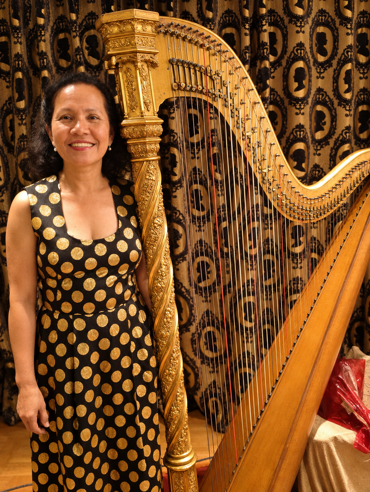
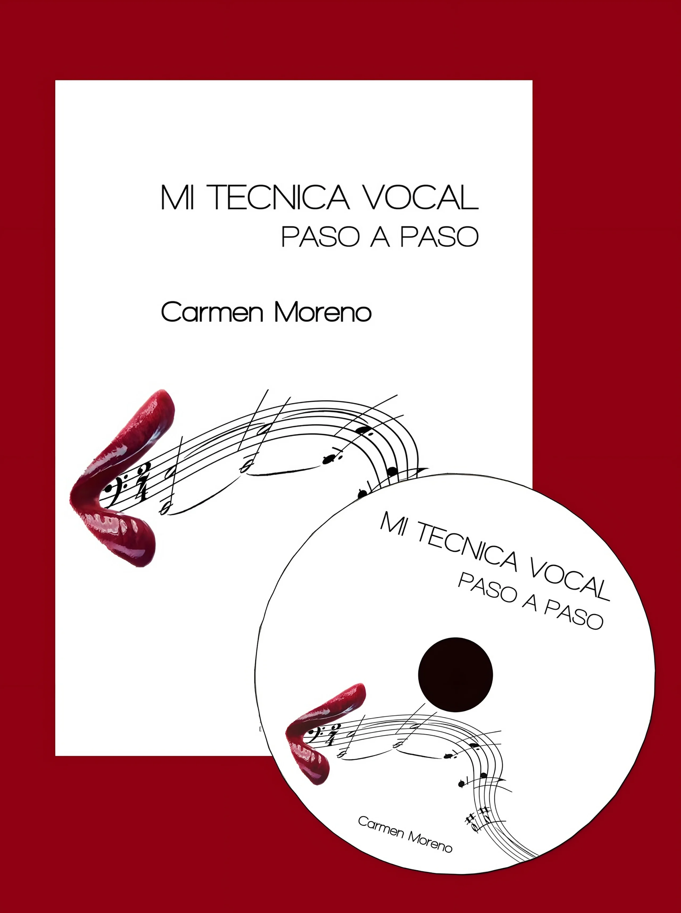
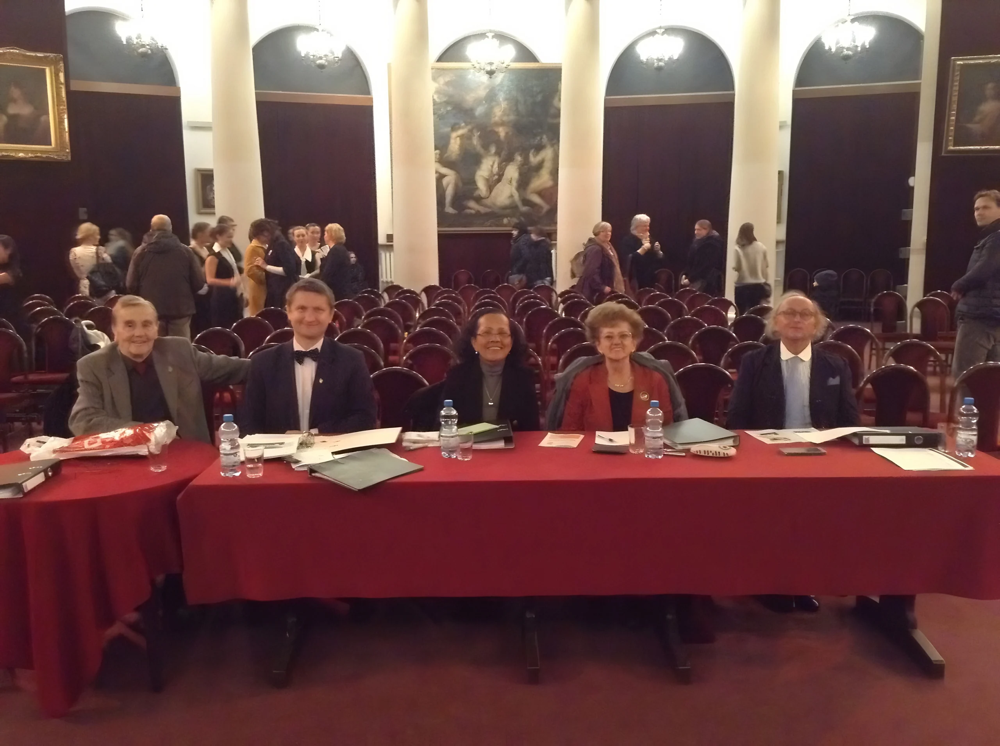

Respiració abdominal
La musculatura costal i abdominal genera la pressió de suport que sosté les frases llargues, les notes allargades i els aguts.
Carmen Moreno
Soprano · Mestra de tècnica vocal · Directora coral
Auditori AXA · Festival Gaudilart 2015
Carmen Moreno és soprano lírica lleugera, directora coral i bioanalista. Des de 1995 ensenya una tècnica vocal que explica què fan la respiració, la mandíbula i els llavis perquè la veu soni lliure, timbrada i sense esforç.


Una soprano amb mirada científica
La Carmen va néixer a Cumaná (Veneçuela) i és llicenciada en Educació i en Bioanàlisi. Aquesta formació científica li va donar una pregunta que ha guiat tota la seva carrera: què passa exactament al cos quan una nota sona lliure i quan sona estreta?
La seva resposta és un mètode concret. Es tracta de comprendre la respiració abdominal, la protrusió de la mandíbula i el treball dels llavis fins a col·locar el so al vòmer. Després, cada interval de la vocalització s’aplica a aquests mateixos intervals a les obres. Així l’alumne guanya autonomia i deixa de dependre de la imitació.
El temps invertit a aprendre tècnica vocal és temps guanyat en l’estudi de les obres.Carmen MorenoLa seva història completa
El mètode
El mètode de la Carmen no es basa a imaginar colors ni a buscar els aguts «a dalt». Es basa en moviments anatòmics que es poden aprendre, observar i corregir.
La musculatura costal i abdominal genera la pressió de suport que sosté les frases llargues, les notes allargades i els aguts.
La mandíbula avança en diagonal, sense desviar-se cap a un costat, per deixar lliure la nota aguda abans que arribi.
Comissures a prop, llavi inferior que baixa i llavi superior que s’eleva per acostar els harmònics i timbrar el so.
L’objectiu final de la vocalització: un so timbrat, lliure i brillant, al mateix punt del rostre per als greus i els aguts.
Test de quatre preguntes
Respon amb sinceritat i et direm quin programa encaixa amb tu. Després podràs sol·licitar la teva classe amb el missatge ja preparat.
Programes
La base tècnica és la mateixa per a tothom. El que canvia és el punt de partida, el repertori i l’exigència de cada estil.

Les bases del cant: respiració, mandíbula, llavis i col·locació, aplicades des del primer dia a una obra.
Mira el programa
La tècnica d’un solista al servei de les obres que assaja la teva coral.
Mira el programa
Diagnòstic del que falla en un passatge i exercicis amb aquests mateixos intervals.
Mira el programa
Per a docents, locutors i qui parla tot el dia: cuidar la veu sense irritar les cordes vocals.
Mira el programaEn primera persona
En aquest vídeo (en castellà) la Carmen presenta la seva feina, com entén la tècnica vocal i què pot esperar qui comenci a estudiar amb ella.
Testimonis
Missatges en vídeo de persones que han rebut les seves classes. Passa el cursor per veure’ls en silenci o fes clic per veure’ls sencers.
Escola en línia
La Carmen et veu i t’escolta, i comparteix la partitura en pantalla per assenyalar cada interval mentre cantes. Només necessites un espai tranquil, connexió i ganes de cantar millor.
Explica què vols treballar i quins horaris et van bé.
Et proposa dia, hora i format, i t’indica com pagar.
Reps un enllaç privat de videotrucada per a aquell dia.
Carmen
El llibre
Tot el que el cantant vol saber (en castellà): com respirar, com deixar caure la mandíbula, on col·locar el so i quin paper tenen els llavis i les comissures.
Es va presentar el dia de Sant Jordi de 2012 a Barcelona. Inclou un DVD en 3D que mostra què passa dins la cavitat abdominal i del rostre mentre es canta.
Fora de l’aula
La Carmen dirigeix corals des de 1999, ha cantat en alguns dels espais més bonics de Barcelona i ha format part del jurat de festivals corals a Gal·les, Polònia, Eslovàquia i Catalunya.



Espanya ara és la meva terra, però Veneçuela serà sempre el meu cel.Carmen Moreno · Varsòvia, 2014

La teva primera classe
Explica a la Carmen què vols cantar i què et costa. Et proposarà un punt de partida i un horari que encaixi amb tu, en línia o a Barcelona.